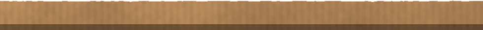

؟
دينار


تشرين الأول2026


ALLAWI 400
▸ 12 ▸ 12A


قسيمة راتب
الشهر: تشرين الأول
الموظف: ـــــــــــ
الدرجة: السابعة
الاستقطاعات: ٠
صافي الراتب
750,000


وصل اشتراك مولدة
No. 0417
الاسم: أبو علي
الأمبيرات: ٥
الشهر: تشرين الأول
المبلغ: ــــــــ
زيادة

٣,٠٠٠
٣,٥٠٠
اليوم، ١١:١١
ليش غيّرت السعر؟
الدولار صاعد عيوني

مطعم الحي
فاتورة رقم ٢٣٨
لفّة فلافل × ١
$0.67
شكراً لزيارتكم


؟
؟
؟
؟
؟
؟
؟
ALLAWI 400
▸ 13 ▸ 13A
محد يدري.
محد يدري.


سعر الـ١٠٠$ اليوم
بغداد ........................
بعقوبة .....................
البصرة .....................
الموصل ....................
أربيل ........................
؟
؟
؟
؟
؟
ALLAWI 400
▸ 14 ▸ 14A
Allawi
ALLAWI.PSD
جريدة علاوي
الأربعاء ٧ تشرين الأول ٢٠٢٦ · العدد ٤١٢
الدولار يقفز.. والسوق يغلي

ارتفع سعر صرف الدولار في الأسواق المحلية خلال الأسبوع الحالي، وسط ترقّب المواطنين وأصحاب المحلات لأي قرار جديد. وقال تجّار إن الأسعار تتغيّر كل يوم، وإن المواطن صار يحسب حسابه قبل أي شراء. ارتفع سعر صرف الدولار في الأسواق المحلية خلال الأسبوع الحالي.
وفي الأسواق الشعبية، قال أصحاب المحلات إن البضاعة المستوردة أول ما تتأثر، بينما يحاول المواطن أن يدبّر أموره كما تعوّد دائماً. وفي الأسواق الشعبية، قال أصحاب المحلات إن البضاعة المستوردة أول ما تتأثر.
وتبقى الأسئلة نفسها في كل بيت: هل سينزل الدولار؟ ومتى؟ ولا أحد يملك الجواب حتى الآن. وتبقى الأسئلة نفسها في كل بيت: هل سينزل الدولار؟ ومتى؟